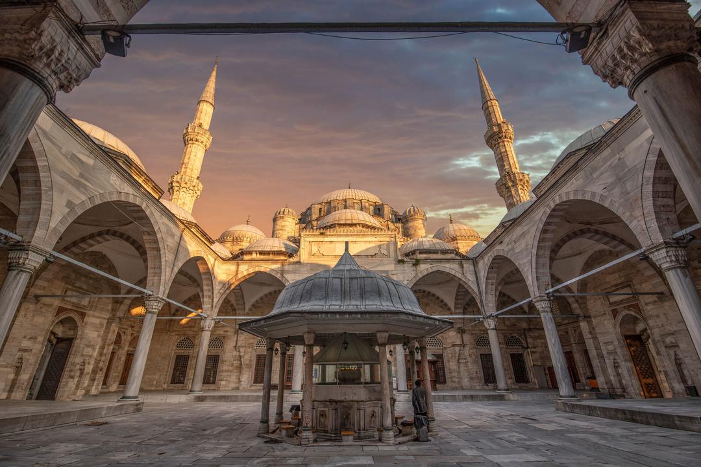

Стамбул
Собор Святой Софии
До завоевания турками Константинополя это был православный собор,
построенный еще в 537 году. Когда турки захватили город, собор Святой
Софии решили не разрушать, а переделать в мечеть: для этого к собору
были пристроены минареты и называться он стал Айя София. С лета 2020
года Ай София больше не музей, а действующая мечеть! Посетить ее можно
совершенно бесплатно. Главное соблюдать дресс код — никаких коротких
юбок и шорт, девушкам платок на голову.
Голубая мечеть
Голубая мечеть первая по значению мечеть Стамбула. Насчитывает шесть
минаретов: четыре, как обычно, по сторонам, а два чуть менее высоких —
на внешних углах. Считается выдающимся образцом исламской и мировой
архитектуры. Мечеть расположена на берегу Мраморного моря, в
историческом центре Стамбула в районе Султанахмет, напротив Айя-Софии.
Мечеть является одним из символов города.
Цистерны Базилика
Цистерна Базилика является раннесредневековым чудом византийской техники
и инженерного дела. Возведение Цистерны Базилики была начато при
правление первого христианского императора Римской Империи Константина I
(306- 337) и закончено в 532 году во время правления византийского
императора Юстиниана во время серии крупного строительного проекта в
Константинополе. В Цистерне Базилики хранился резерв питьевой воды на
случай засухи или осады города.
Мечеть Сулеймание
Одна из самых красивых мечетей Стамбула — Сулеймание. Увидеть ее стоит
не только из-за гигантских размеров (в этом она уступает только собору
Святой Софии) и архитектурных особенностей. Она была спроектирована
зодчим Синаном и возведена по приказу султана Сулеймана Великолепного.
Это поразительное сооружение вмещает 5 тыс. верующих, а на его
территории расположены медресе, библиотеки, бани, кухни, больницы, приют
для путников и обсерватория. Такое количество строений легко могло
занять городской квартал. Поклонники романтической истории любви
Сулеймана Великолепного и его возлюбленной жены Хюррем (известной также
как Роксолана) смогут посетить их захоронение во дворе мечети, на
кладбище. С ними покоится их любимая дочь Михримах.
